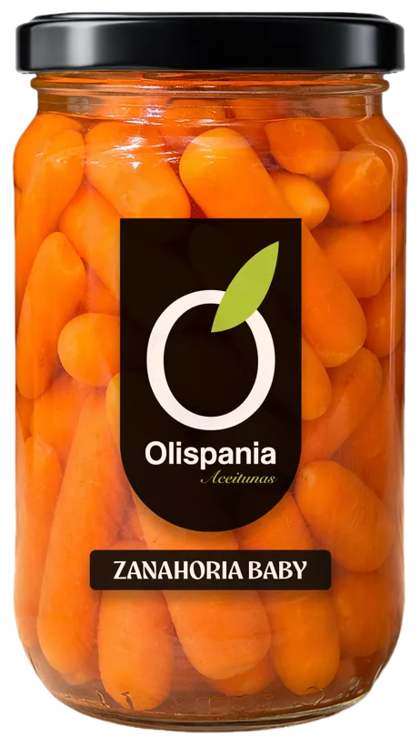
Salads and vegetables
Baby carrots
- 314 ml
- 300 g
- Format
- 314 ml
- Net weight
- 300 g
- Drained weight
- 170 g
Download the range sheet (PDF) See the whole range
Range: Jar 314 ml
More from this range
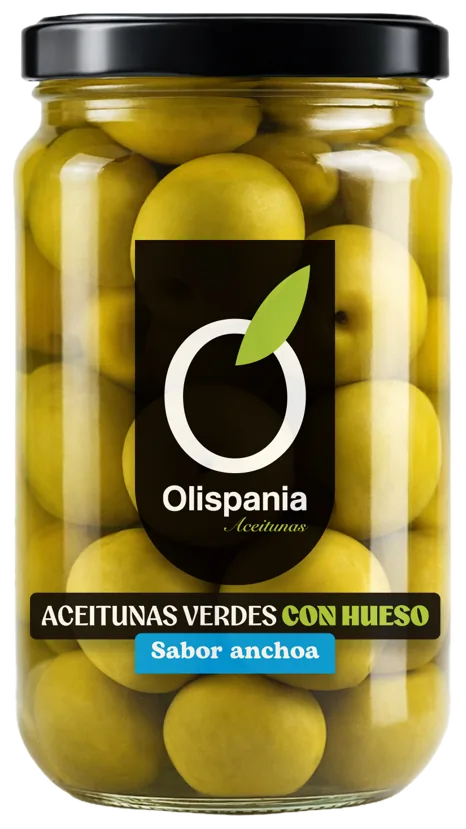
Extra large whole green olives, anchovy flavour. Manzanilla variety
314 ml
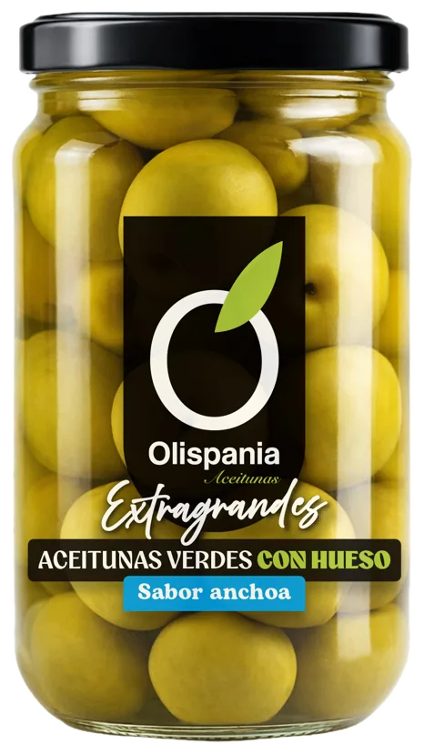
Whole green olives, anchovy flavour. Manzanilla variety
314 ml
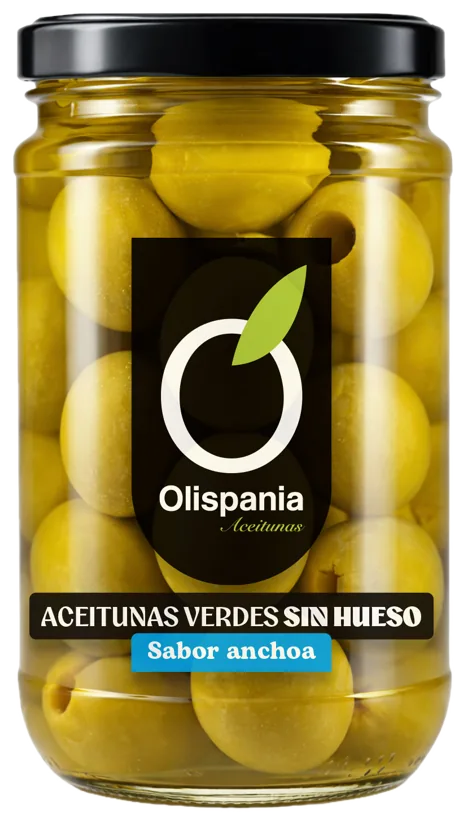
Pitted green olives, anchovy flavour. Manzanilla variety
314 ml

Olive and pickle cocktail
314 ml
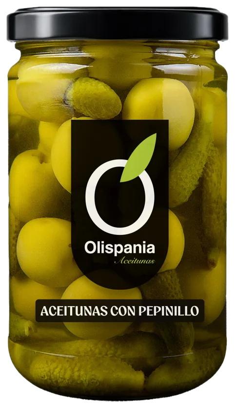
Olives with gherkin
314 ml
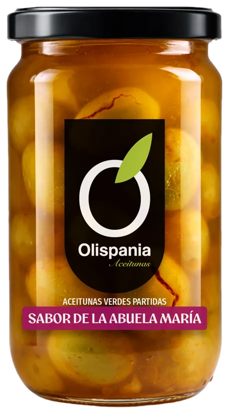
Cracked seasoned green olives «Grandma María’s recipe»
314 ml

Cracked seasoned green olives «Chupadedos»
314 ml

Cracked seasoned green olives «Mojo picón»
314 ml
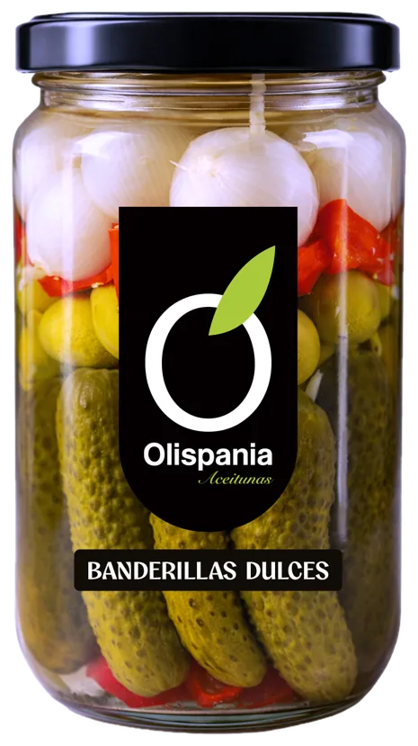
Sweet banderillas (pickle skewers)
314 ml
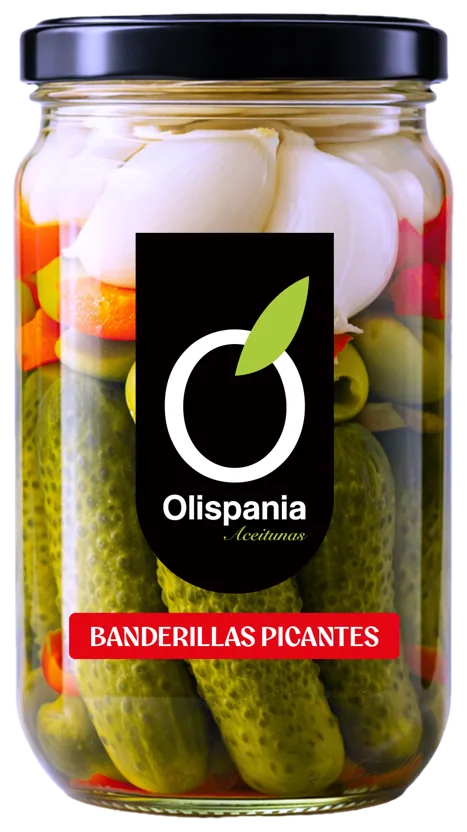
Spicy banderillas (pickle skewers)
314 ml
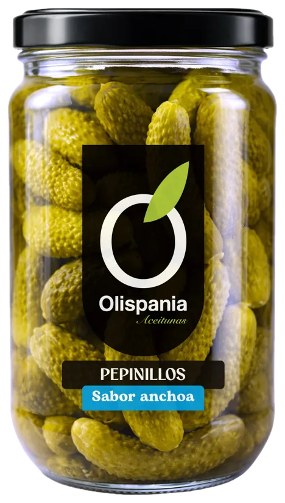
Anchovy-flavoured gherkins
314 ml
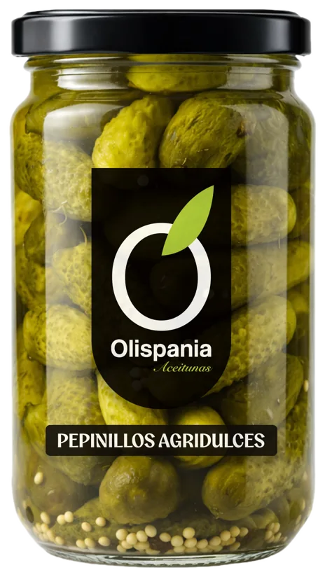
Sweet and sour gherkins
314 ml
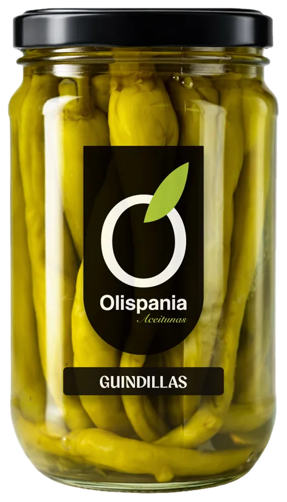
Chilli peppers
314 ml

Pearl onions
314 ml
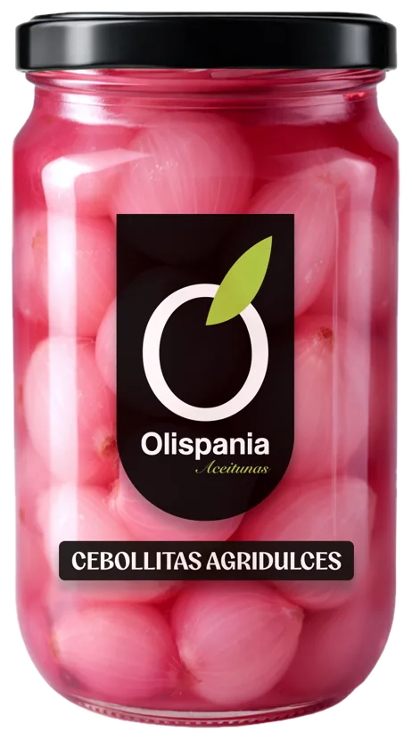
Sweet and sour pearl onions
314 ml
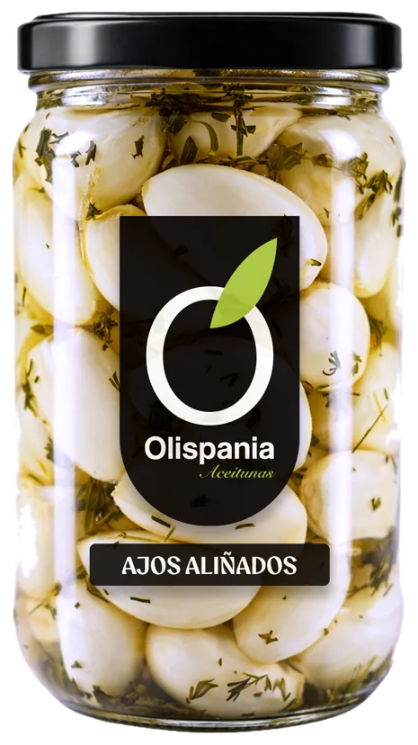
Seasoned garlic
314 ml
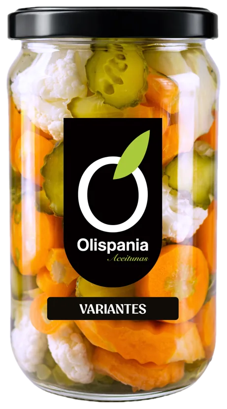
Mixed pickles
314 ml
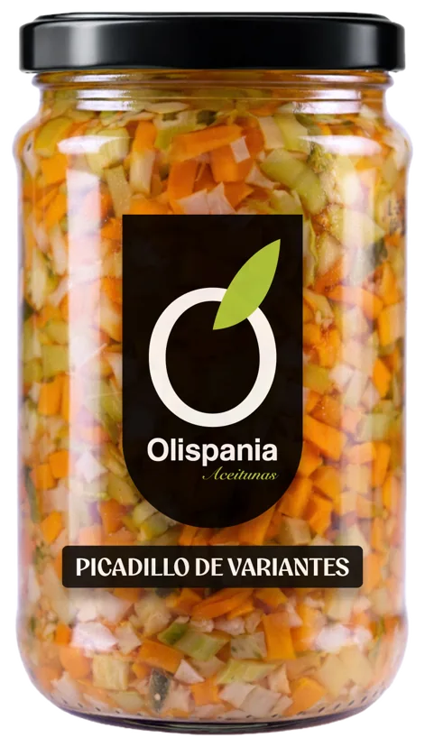
Chopped mixed pickles
314 ml